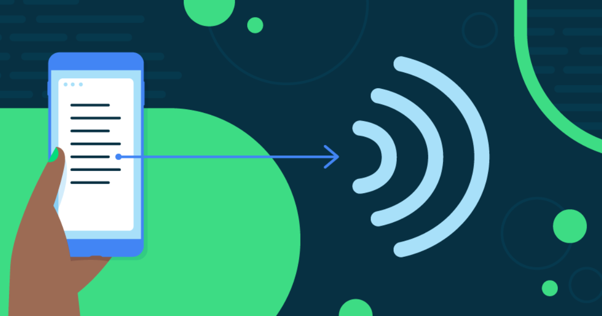

Tensorflow CNN
Embarking on the voyage of sign language interpretation, Handlexa harnesses the formidable power of a TensorFlow Convolutional Neural Network (CNN). This neural marvel represents the culmination of cutting-edge research and meticulous engineering, underpinned by the principles of transfer learning and architectural refinement.
Through the Lens of Transfer Learning
HandLexa inherits a rich tapestry of visual knowledge from the venerable MobileNet model, enabling expedited convergence and robust classification of hand signs. The augmentation of MobileNet's architecture with bespoke dense layers serves as a testament to HandLexa's bespoke approach, tailored to the intricate subtleties of sign language interpretation.
The Fusion of Expertise and Adaptation
This fusion of pre-trained expertise and bespoke adaptation empowers HandLexa to navigate the complex landscape of sign language gestures with unparalleled accuracy and efficiency. As the cornerstone of HandLexa's cognitive framework, the TensorFlow CNN stands as a testament to innovation, democratizing access to seamless communication for all.
Challenges in Sign Language Interpretation
Sign language interpretation presents a unique set of challenges in the realm of artificial intelligence and machine learning. Unlike spoken languages, which rely heavily on auditory cues, sign language relies on visual gestures and expressions, making it inherently spatial and dynamic in nature. This complexity necessitates specialized approaches to image recognition and pattern analysis, which traditional machine learning techniques often struggle to address.
The Role of HandLexa's TensorFlow CNN
HandLexa's TensorFlow CNN—a cutting-edge solution designed specifically to tackle the complexities of sign language interpretation—stands upon the foundation of transfer learning. Built upon the pre-existing knowledge encoded within the MobileNet model, this neural network accelerates the learning process, focusing on the nuances unique to sign language.
The Power of Transfer Learning
Transfer learning enables HandLexa to benefit from the vast repository of visual information encapsulated within MobileNet's architecture. By reusing and adapting these learned features, HandLexa can bypass the laborious process of training a CNN from scratch, accelerating the development cycle and enhancing overall performance.
Bespoke Adaptation for Sign Language
Recognizing the need for specialized adaptation to the intricacies of sign language, HandLexa augments the MobileNet architecture with bespoke dense layers. Fine-tuned to extract and interpret the subtle nuances of hand gestures, this bespoke adaptation enhances HandLexa's ability to discern and classify gestures with unparalleled accuracy and efficiency.
Empowering Accessibility and Inclusivity
HandLexa's TensorFlow CNN embodies a commitment to inclusivity and accessibility. By democratizing access to seamless communication, HandLexa empowers individuals with hearing impairments to engage fully in a world that often overlooks their needs.
A Beacon of Progress
As a testament to innovation and social responsibility, HandLexa's TensorFlow CNN stands as a beacon of progress—a symbol of how technology can bridge gaps and empower individuals to connect, communicate, and thrive.